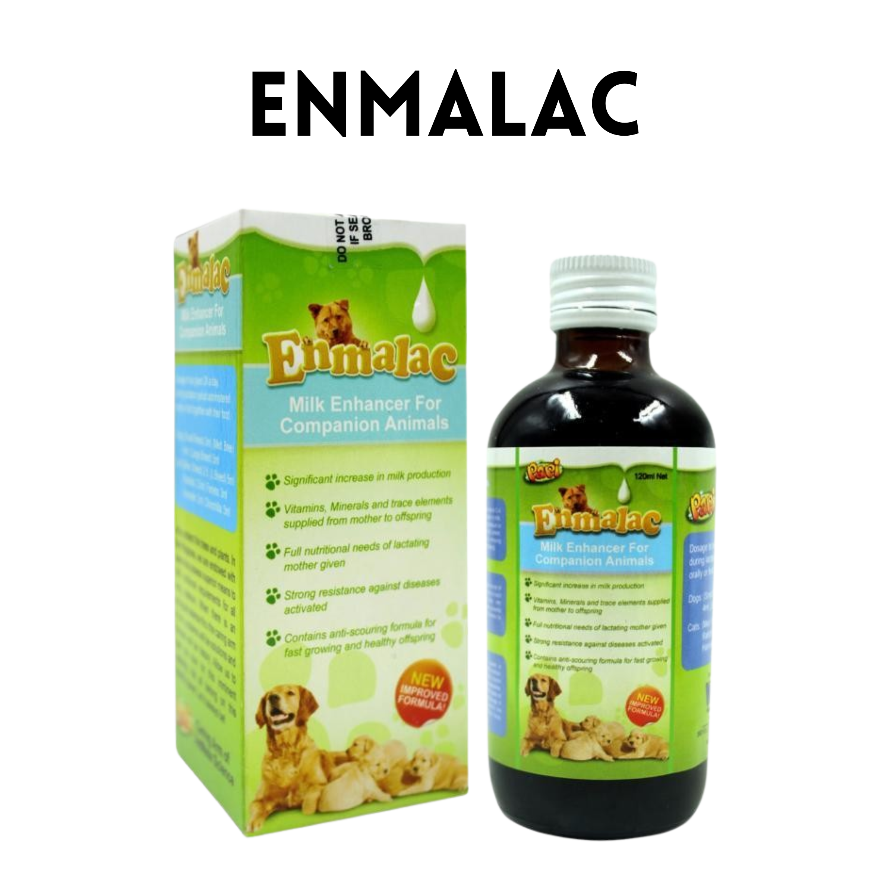

PAPI ENMALAC MILK ENHANCER
₱210.00 (120ml)
- A supplement for lactating dogs, cats, rabbits, ferrets, hamster and chinchilla
- Helps provide vitamins, minerals and trace elements supplied from mother to offspring.
- Helps provide sufficient vitamins, minerals and nutrients for a lactating mother so that she can supply milk for her growing puppies
- Contains anti-scouring formula for fast growing and healthy offspring